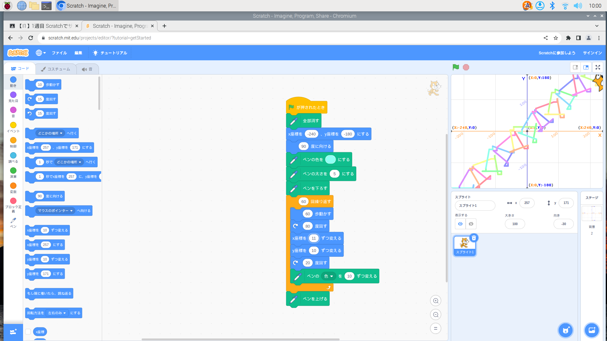
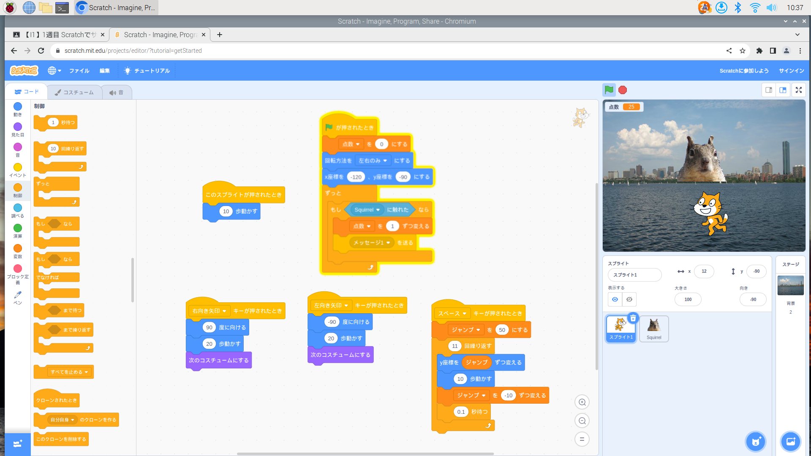

1週目のレポート ： 公大高専１年実習I-1
3B班27番 H.T
第1週目
1-1 サイエンスアート

1.内容
スクラッチを使って線を書くプログラムを作りました。少しだけ角度を変えながら右斜め上に動いていくようにしました。
また、色を少しずつ変わるようにしたので、とても綺麗な虹色ができます。
またはじめの色は固定したので毎回同じ配色になります。
2.感想
プログラムを規則的に動かすことによって、幾何学模様ができるので、面白いと思いました。
工夫をすれば、アニメや漫画のキャラクターをかけると思いました。
なので、自宅学習の際、もっと複雑な絵を書いてみたいと思います。
1-2 ゲーム

1.内容
キーボードの矢印キーを使い、猫を動かして、カワウソを捕まえるゲームを作りました。
また、カワウソを捕まえるごとに1点ずつ追加されるようになっています。
また、猫を左右に動かす際にちゃんと猫の顔や体の向きが変わるようになっています。
2.感想
スクラッチで簡単なゲームを作れることに対してとても驚きました。
もっと猫以外のキャラクターやオブジェクトの動きを追加すればもっと複雑なゲームをつくることができると思います。
1-3 ホームページ作成
私のホームページ
1.内容
自分のトップページをHTMLで作りました。
2.感想
はじめの方は難しいところや全然理解できないところが多くありました。でも、実際に編集をしているうちに楽しくなってきました。
現時点では自分にとってコードを書いたり理解する知識が難しいので、もっと勉強が必要だと感じました。